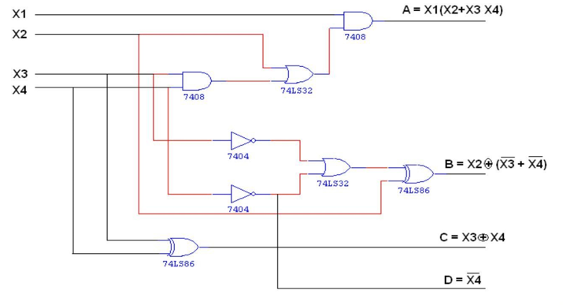

Design and implement a 4-bit BCD to Excess-3 code converter.
1] Binary to Gray Code
2] Gray to Binary Code
3] BCD to Excess-3 Code
4] Excess-3 to BCD Code
There is a wide variety of binary codes used in digital systems. Some of these codes are binary- coded -decimal (BCD), Excess-3, Gray, octal, hexadecimal, etc. Often it is required to convert from one code to another. For example, the input to a digital system may be in natural BCD and output may be 7-segment LEDs. The digital system used may be capable of processing the data in straight binary format. Therefore, the data has to be converted from one type of code to another type for a different purpose. The various code converters can be designed using gates.
A conversion circuit must be inserted between the two systems if each uses different codes for same information. Thus, code converter is a circuit that makes the two systems compatible even though each uses different binary code. A code converter is a circuit that makes the two systems compatible even though each uses a different binary code.
1] Binary to Gray Conversion
In this conversion, the input straight binary number can easily be converted to its Gray code equivalent.
1. Record the most significant bit as it is.
2. EX-OR this bit to the next position bit, record the resultant bit.
3. Record successive EX-ORed bits until completed.
Example

2] Gray to Binary Conversion
In this conversion, the input straight binary number can easily be converted to its Gray code equivalent.
1. The Gray code can be converted to binary by a reverse process.
2. Record the most significant bit as it is.
3. EX-OR binary MSB to the next bit of Gray code and record the resultant bit.
4. Continue the process until the LSB is recorded.
Example
3] BCD to Excess-3 Conversion
For converting 4 bit BCD code to Excess – 3, add 0011 i. e. decimal 3 to the respective code using rules of binary addition.
Example
Convert BCD 2 i. e. 0010 to Excess-3 code
0010 + 0011 = 0101 -> Excess-3 code for BCD 2
The 4-bit Excess-3 code digit can be converted into BCD code by subtracting decimal value 3 i.e. 0011 from 4-bit Excess-3 digit.
Example
Convert 4-bit Excess-3 value 0101 to equivalent BCD code.
0101-0011= 0010- BCD for 2
1] Binary to Gray Code Conversion:
1.1] Truth Table
1.2] K-Map for Reduced Boolean Expressions of Each Output:
1.3] Circuit diagram:
2] Gray to Binary Code Conversion:
2.1] Truth Table
2.2] K-Map for Reduced Boolean Expressions of Each Output:
2.3] Circuit diagram:
3] BCD to Excess-3 Code Conversion:
3.1] Truth Table
3.2] K-Map for Reduced Boolean Expressions of Each Output:
3.3] Circuit diagram:
4] Excess-3 to BCD Code Conversion:
4.1] Truth Table
4.2] K-Map for Reduced Boolean Expressions of Each Output:
4.3] Circuit diagram:

Follow the below steps
1. Connections were given as per circuit diagram.2. Logical inputs were given as per truth table.
3. Observe the logical output and verify with the truth tables.
Here you can embed an interactive simulation tool or provide links to simulation resources.
Q.1] What is the need of code converters?
There is a wide variety of binary codes used in digital systems. Often it is required to convert from one code to another. For example the input to a digital system may be in natural BCD and output may be 7-segment LEDs. The digital system used may be capable of processing the data in straight binary format. Therefore, the data has to be converted from one type of code to another type for different purpose.
Q.2] What is Gray code?
It is a modified binary code in which a decimal number is represented in binary form in such a way that each Gray- Code number differs from the preceding and the succeeding number by a single bit.
(e.g. for decimal number 5 the equivalent Gray code is 0111 and for 6 it is 0101. These two codes differ by only one bit position i. e. third from the left.) It is non weighted code.
Q.3] What is the significance of Gray code?
Important feature of Gray code is it exhibits only a single bit change from one code word to the next in sequence. Whereas by using binary code there is a possibility of change of all bits if we move from one number to other in sequence (e.g. binary code for 7 is 0111 and for 8 it is 1000). Therefore it is more useful to use Gray code in some applications than binary code.
Q.4]What are applications of Gray code?
1. Important feature of Gray code is it exhibits only a single bit change from one code word to the next in sequence. This property is important in many applications such as Shaft encoders where error susceptibility increases with number of bit changes between adjacent numbers in sequence.
2. It is sometimes convenient to use the Gray code to represent the digital data converted from the analog data (Outputs of ADC).
3. Gray codes are used in angle-measuring devices in preference to straight forward binary encoding.
4. Gray codes are widely used in K-map
Q.5] What are weighted codes and non-weighted codes?
In weighted codes each digit position of number represents a specific weight. The codes 8421, 2421, and 5211 are weighted codes. Non weighted codes are not assigned with any weight to each digit position i.e. each digit position within the number is not assigned a fixed value. Gray code, Excess-3 code are non-weighted code.
Q.6] Why is Excess-3 code called as self-complementing code?
Excess-3 code is called self-complementing code because 9’s complement of a coded number can be obtained by just complementing each bit.
Q.7] What is invalid BCD?
With four bits, sixteen numbers (0000 to 1111) can be represented, but in BCD code only 10 of these are used as decimal numbers have only 10 digits from 0 to 9. The six code combinations (1010 to 1111) are not used and are invalid.
- Reference 1: “Digital Fundamentals” by Floyd & Jain
- Reference 2: R. P. Jain, “Modern Digital Electronics”, 3rd Edition, Tata McGraw-Hill
- Reference 3: 3. Malvino, D.Leach“Digital Principles and Applications”, 5th edition, Tata McGraw- Hill